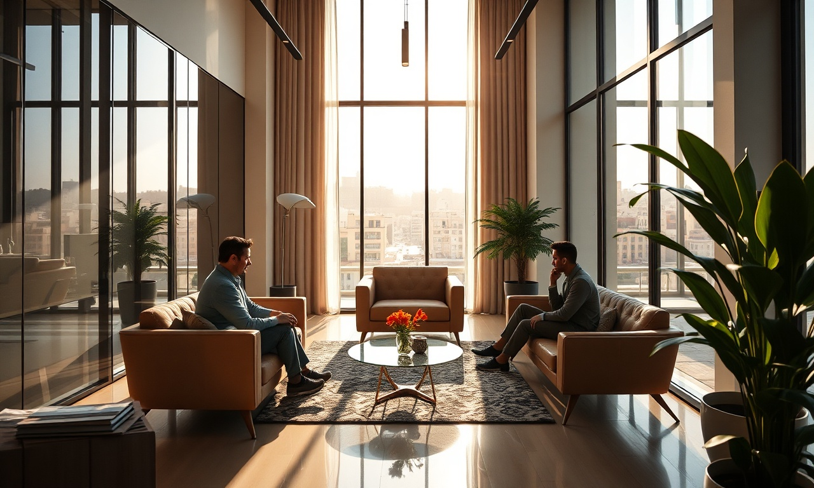

L'affichage dynamique change la donne pour la com' visuelle des boîtes marocaines. En troquant les vieux supports contre des écrans connectés, vous attirez le regard des clients et faites grimper les ventes. Mais concrètement, quel est le vrai retour sur investissement de ce genre de technologie ?
C'est quoi, l'affichage dynamique ?
L'affichage dynamique, aussi appelé digital signage, se sert d'écrans pour balancer du contenu vidéo en direct. Contrairement aux affiches en papier, vous pouvez changer vos messages en un clic, les programmer pour des heures précises et même interagir avec votre public.
ما يمكنه فعله
- التحديث عن بُعد عبر السحابة
- البرمجة الزمنية والاستهداف
- التكامل مع وسائل التواصل الاجتماعي وخلاصات RSS
- قياس الجمهور والتحليلات
كيف يزيد العرض الديناميكي من عائد الاستثمار
يظهر عائد الاستثمار للعرض الديناميكي في زيادة المبيعات، وانخفاض التكاليف، وتحسين تجربة العملاء. إليكم العوامل الرئيسية:
هل تريد تطبيق هذه الاستراتيجيات دون عناء؟خبراء DatRey يتولون الأمر.

المبيعات التي تنطلق
تُظهر دراسة Nielsen أن العرض الديناميكي يمكن أن يزيد المبيعات بنسبة 30% في المتاجر. في المغرب، شهدت علامات تجارية مثل مرجان ارتفاعًا بنسبة 25% بعد تركيب شاشات ديناميكية.
تكاليف أقل
انتهت تكاليف الطباعة الباهظة: شاشة واحدة تحل محل مئات الملصقات. يمكنك توفير ما يصل إلى 60% من تكاليف الاتصال.
العملاء يتفاعلون
تجذب الشاشات الأنظار: 80% من العملاء يتذكرون رسالة شاهدوها على شاشة ديناميكية (المصدر: Arbitron).

الأرقام الرئيسية لعائد الاستثمار في العرض الديناميكي
| المؤشر | القيمة | المصدر |
|---|---|---|
| زيادة المبيعات | +30% | Nielsen |
| خفض تكاليف الطباعة | -60% | DatRey |
| معدل التذكر | 80% | Arbitron |
| متوسط عائد الاستثمار | 200% في سنة واحدة | DatRey |
كيفية تعظيم عائد الاستثمار الخاص بك
- حدد أهدافك: مبيعات، شهرة، معلومات.
- اختر المكان المناسب: مناطق المشاة، نقاط البيع.
- أنشئ محتوى جذابًا: فيديوهات قصيرة، عروض ترويجية، حركات.
- قس واضبط: التحليلات تساعدك على تحسين رسائلك.
أمثلة ناجحة في المغرب
قامت سلسلة مطاعم للوجبات السريعة في الدار البيضاء بوضع شاشات ديناميكية في طوابير الانتظار. النتيجة: ارتفع متوسط سلة المشتريات بنسبة 20% بفضل اقتراحات القائمة.
Un centre commercial à Rabat a utilisé l'affichage dynamique pour promouvoir ses événements. Le trafic piétonnier a augmenté de 15%.
FAQ
Combien coûte une solution d'affichage dynamique ?
Le prix dépend du nombre d'écrans et des fonctions. Comptez entre 5 000 et 20 000 MAD par écran installé, avec un abonnement mensuel de 500 à 2 000 MAD pour gérer le contenu.
Est-ce que ça vaut le coup pour une petite entreprise ?
Oui, il existe des solutions pas chères. Un seul écran bien placé peut déjà rapporter gros, surtout dans les commerces de quartier.
Comment je mesure le ROI de mon affichage dynamique ?
Utilisez des codes promo uniques, des QR codes, ou des sondages clients. Les logiciels de digital signage ont souvent des outils d'analyse intégrés.
Et après ?
L'affichage dynamique, c'est un investissement qui paie pour les entreprises marocaines. Avec un ROI moyen de 200% en un an, il booste les ventes, réduit les coûts et fidélise la clientèle. Prêt à sauter le pas ? Contactez DatRey pour une étude sur mesure. Découvrez aussi nos services SEO et Google Ads pour compléter votre stratégie digitale.
Besoin d'accompagnement ?
Les experts DatRey vous aident à atteindre vos objectifs digitaux au Maroc.
اطلب تدقيقاً مجانياً →